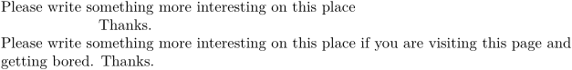
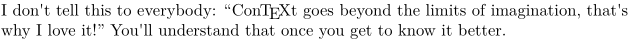

Probably for your slides, probably for some Animation or for whatever reason you may want it: you can hide some content from the document, while leaving exactly the same amount of space as that content would need if typeset in the usual way.
Beware, this doesn’t work in current (2018) MkIV. Have a look at PDF viewer layers, attr-lay.mkiv.
Overview
On the mailing list Hans suggested many different ways (astonishing easy to use) to hide the content in a PDF document. Sadly, most of them are viewer-dependent.
| method | properties |
|---|---|
\defineeffect[my-secrets][layer][state=top] \starteffect[my-secrets] My public secret. \stopeffect |
|
\defineeffect[my-hesitations][layer][state=stop] \starteffect[my-hesitations] To \ConTeXt\ or not to \ConTeXt? \stopeffect \button{Show Decision}[VideLayer{my-hesitations}] \button{Hide Decision}[HideLayer{my-hesitations}] \button{Toggle Decision}[ToggleLayer{my-hesitations}] |
|
\starteffect[hidden] % In MkIV My secret hidden for Adam's apple ;) \stopeffect |
|
| the plain TeX way |
|
The plain TeX way
This example was adapted from the TeXBOOK. However, it can only handle usual text. Forget about macros, forget about graphics ...
I hope and still believe that it is possible to extend this macro to make it work in general case. This would also be a preferred solution as it doesn't depend on the viewer's JavaScript incapabilities.
%%%%%%%%%%%%%%%%%%%%%%%%%%%%%%%%%%%%%%%%%%%%%%%%%%%%%%%%%%%%%%%% % the portion of code adapted from the TeXBOOK, Excercise 11.5 % %%%%%%%%%%%%%%%%%%%%%%%%%%%%%%%%%%%%%%%%%%%%%%%%%%%%%%%%%%%%%%%% \def\dolist{\afterassignment\dodolist\let\next= } \def\dodolist{\ifx\next\endlist\let\next\relax \else \\\let\next\dolist \fi \next} \def\endlist{\endlist} \def\\{\if\space\next\ % assume that \next is unexpandable \else\setbox0=\hbox{\next}\setbox1=\hbox{}% \dp1=\dp0\ht1=\ht0\wd1=\wd0\box1\fi} \def\demobox#1{{\dolist#1\endlist}}
- 
Layer: state=top
You can try something like:
\defineproperty[my-secrets][layer][state=top] I don't tell this to everybody: % \startproperty[my-secrets]% \quotation{\ConTeXt\ goes beyond the limits of imagination, that's why I love it!} \stopproperty % You'll understand that once you get to know it better.
which results in
This can be compared to the non-hidden version, which is:
- 
Final Remarks
- Just as a hint: don't ever think about hiding your secrets or solutions to the problems for your students this way. Readers with Adobe Acrobat Professional can select Layers on the left and switch the hidden layer on again. You have been warned.
- Kerning could cause miniscule differences in the exact placement of the (hidden) content.